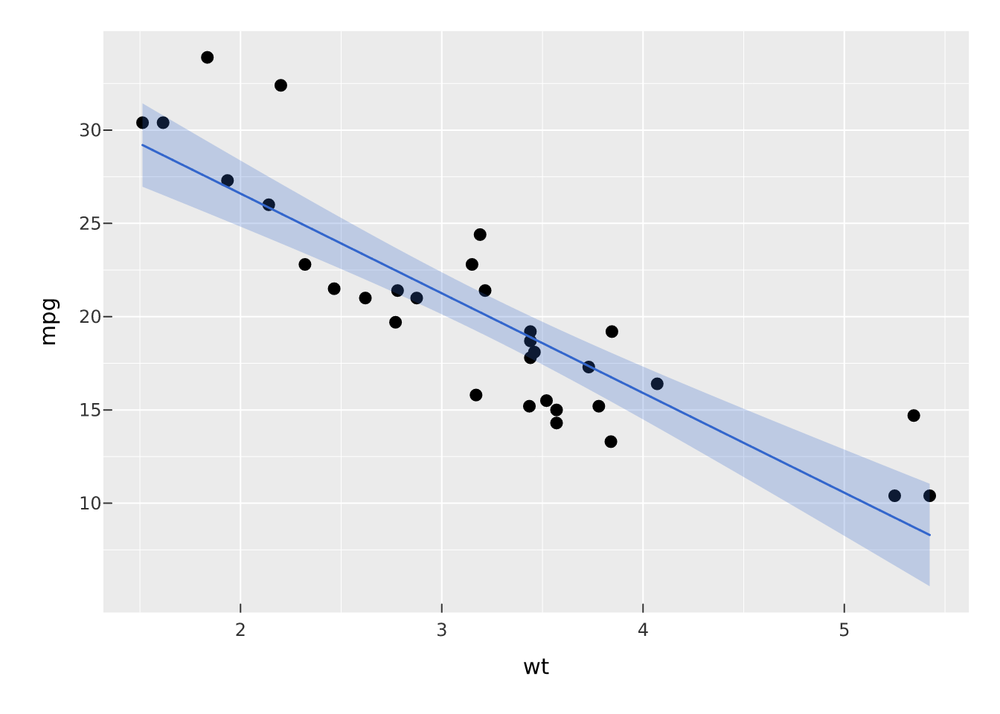
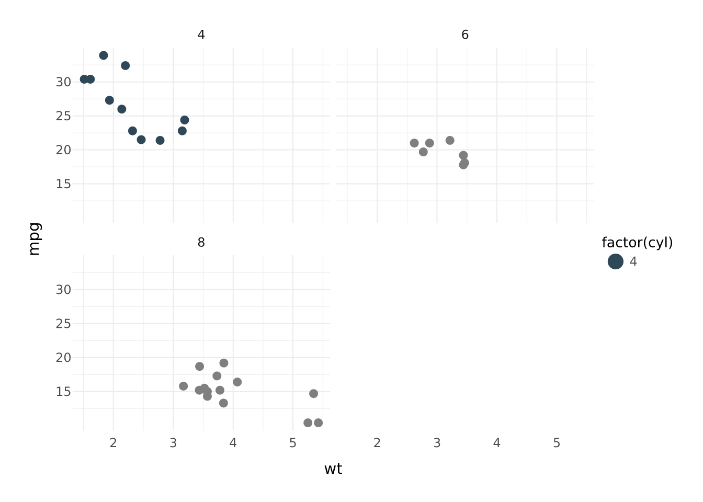

If you already think in ggplot2, vellumplot will feel familiar: data in, aesthetics mapped to marks, scales and facets and themes layered on top. The grammar is the same idea. Four things are different, and once they click the rest is a matter of renaming.
Throughout, the ggplot2 code is shown for reference and the vellumplot equivalent is the one rendered.
The four differences
1. |>, not +. Layers are joined with the base pipe. A vellumplot plot is an ordinary pipeline, so the first argument of every verb is the plot.
2. No aes(). Aesthetics are named arguments on the mark itself. A bare column name is mapped to data; a literal value is a constant. color = hp is a channel with a legend; color = "red" paints everything red.
3. geom_* becomes mark_*. Same layers, different prefix. geom_point() is mark_point(), geom_smooth() is mark_smooth(), and so on.
4. A plot is a spec, not a picture. vellumplot builds an inspectable specification and compiles it only when printed, saved, or made interactive. summary() shows you the spec without drawing it.
Translation table
| ggplot2 | vellumplot |
|---|---|
ggplot(df, aes(x, y)) |
vplot(df) then mark_*(x = x, y = y)
|
aes(color = z) |
color = z on the mark |
+ |
\|> |
geom_point() |
mark_point() |
geom_line() / geom_path()
|
mark_line() |
geom_col() / geom_bar()
|
mark_bar() |
geom_smooth() |
mark_smooth() |
geom_histogram() |
mark_histogram() |
geom_boxplot() |
mark_boxplot() |
geom_tile() / geom_raster()
|
mark_tile() / mark_raster()
|
geom_hex() |
mark_hex() |
geom_sf() |
mark_sf() |
scale_color_continuous() |
scale_color_continuous() |
scale_*_manual(values = ) |
scale_*_manual(values = ) |
facet_wrap(~z) |
facet_wrap(~z) |
facet_grid(a ~ b) |
facet_grid(a ~ b) |
coord_flip() / coord_polar()
|
coord_flip() / coord_polar()
|
theme_minimal() |
theme_minimal() |
labs(title = ) |
labs(title = ) |
ggsave("p.png") |
render_plot(p, "p.png") |
Note that spelling: vellumplot uses American color as the primary aesthetic name (with colour/fill accepted where it makes sense).
Scatter with a colour scale
# ggplot2
ggplot(mtcars, aes(wt, mpg, color = hp)) +
geom_point() +
scale_color_continuous()
# vellumplot
vplot(mtcars) |>
mark_point(x = wt, y = mpg, color = hp) |>
scale_color_continuous()Points with a fitted line
The layering translates one-to-one; the + becomes a |> and each geom becomes a mark. Note that vellumplot marks carry their own encodings rather than inheriting a top-level aes().
# ggplot2
ggplot(mtcars, aes(wt, mpg)) +
geom_point() +
geom_smooth(method = "lm")
# vellumplot
vplot(mtcars) |>
mark_point(x = wt, y = mpg) |>
mark_smooth(x = wt, y = mpg, method = "lm")
Faceting
facet_wrap() and facet_grid() keep their names and their formula interface.

A bar chart with a manual palette
What you gain
Two things ggplot2 cannot easily do fall out of the spec-first design.
Inspect a plot before drawing it. Because the plot is data, summary() prints its structure:
vplot(mtcars) |>
mark_point(x = wt, y = mpg, color = hp) |>
summary()
#> <PlotSpec> 32x11 (11 columns), page 6x4 in
#>
#> ── layers
#> • mark_point(x = wt, y = mpg, color = hp)Make it interactive for free. The same spec, handed to as_widget(), becomes an HTML widget. The interactive channels (tooltip, data_id) are more mark arguments:
df <- data.frame(wt = mtcars$wt, mpg = mtcars$mpg, model = rownames(mtcars))
vplot(df) |>
mark_point(x = wt, y = mpg, tooltip = model, data_id = model) |>
as_widget()What is different by design
A few ggplot2 habits do not carry over, on purpose:
- There is no global
aes()shared across layers; each mark states its own encodings. This is more verbose for multi-layer plots but removes the inheritance rules you have to keep in your head. -
+chaining and its operator methods are gone; everything is a function in a pipe. - Saving is
render_plot(), notggsave(), and one spec renders to PNG, SVG, and PDF from the same object. See one scene, three outputs.
For the exhaustive list of marks, scales, coords, and themes, see the vellumplot reference.